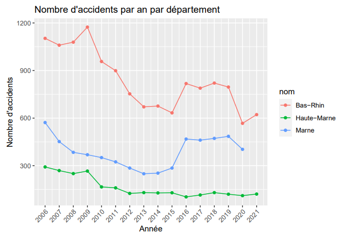
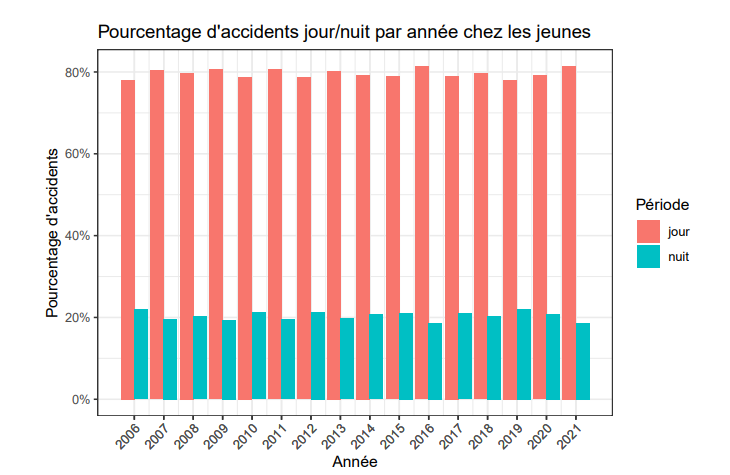

Cette SAE à été réalisée en groupe de 2, le but était de réaliser un étude statistique sur l'accidentologie en France dans la région Grand-Est est sur une population de jeunes entre 18 et 24 ans.
Pour cette Sae les données à utiliser était fournies mais il a fallu nettoyer et extraire uniquement les données concernant notre problématique. Les données une fois triées ont été stockées dans des fichiers CSV.
Pour la suite nous avons exploiter ces données pour en tirer des graphiques et une analyse statistique complète. Pour cela nous avons utilisés le langage R sous l'éditeur RStudio.
Cette SAE ma permis de consolider mes bases en SQL et ma appris à construire une analyse statistique et à produire des graphes pour pouvoir représenter des données. De plus la SAE m'a permis de gagner en compétences sur le langage R.
Images du projet
Exemple de graphes sur le nombre d'accidents par année
Autre exemple sur les accidents jour/nuit
